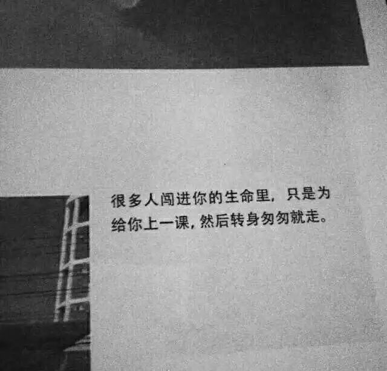

时间：19:30-21:00, 星期五, 11月9日
地点: 北航新主楼A218

即兴演讲
时光
Toastmaster: 王一帆
Table Topics Master: 郭元东
时光中我们变了又没变，还是相信至真至善。但是人生路上遇到的很多事都做不到真正的完美，这不是任何人的错，接受不完美的现实、不完美的家庭、不完美的朋友，这都是点滴岁月中的珍藏。
备稿演讲 (CC)
陈星 CC8——从脱发谈起
白发三千丈,缘愁似个长。最近关于搞科研搞得去三千烦恼丝的推文很火，看来有这个问题的朋友很多啊。有压力如何排解，看我们开心小天使——陈星同学告诉你。

What is Toastmasters
Toastmasters International (TI) is a nonprofit educational organization that operates clubs worldwide for the purpose of helping members improve their communication, public speaking, and leadership skills.
You can find us by the following map of Beihang University.

原文链接（公众号关闭后可能失效）：
https://mp.weixin.qq.com/s/aa-NA8aNELYXHTHxoxvsuw
https://mp.weixin.qq.com/s/aa-NA8aNELYXHTHxoxvsuw
第 443/539 篇 · 北航Toastmasters英文演讲俱乐部公众号存档
本页为抢救式本地归档，图文已永久保存。
本页为抢救式本地归档，图文已永久保存。